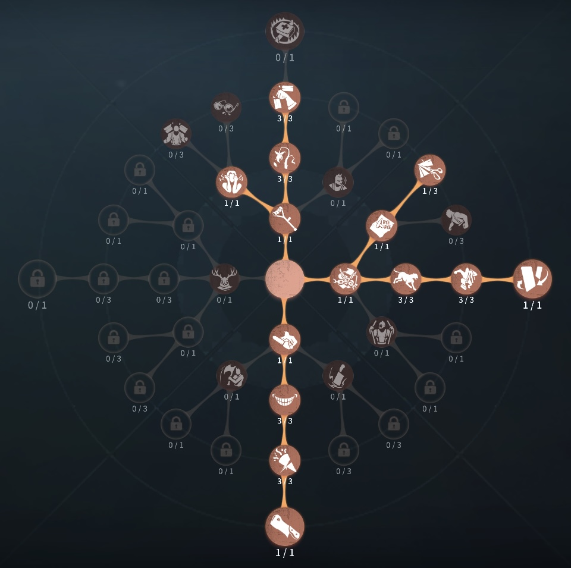

「歯医者」評価
中距離攻撃＆ワープ型！ 素の移動速度は最速組、紫外線放射とレンズ操作でエリアを支配する戦略ハンター！！
| ✅ 長所 | ❌ 短所 |
|---|---|
| 0.5ダメージの遠距離範囲攻撃（引き留める時は1.5倍） | 菌類攻撃の命中が難しく、練度が必要 |
| 放射エリアへのワープ（存在感1で2連ワープ可能） | 通常攻撃・菌類攻撃ともに硬直時間が全ハンター中最長クラス |
| 風船拘束中も菌類攻撃でき、粘着を牽制しやすい | ワープ後に1.7秒の硬直が発生する |
| 光線療法で壁越し索敵・サバイバーへのデバフ付与が可能 | 通常攻撃の射程が狭く（2.87m）、接近時に足止めされやすい |
| 素の移動速度が最速組（アンデッド・書記官と同格） | 菌類攻撃に「表現欲」のバフが乗らない |
| 1階から2階へワープできる希少なハンター | 解読妨害は存在感2解放後でないと機能しない |
外在特質とスキル
特質：【菌類共生】
感染を受けた「歯医者」の腕は、菌類との長期的な共生によって強化されている。「歯医者」がレンズを起動している間は、通常攻撃・溜め攻撃・風船拘束攻撃中の自身の移動速度が5%上昇する。存在感0：【紫外線放射】 チャージ：13秒 チャージ数：1.5／2.0
【紫外線放射】レンズを起動すると障害物で遮られる紫外線を投射し、目標地点に四角形の放射エリアを形成する（10秒間継続）。放射距離には限界があり、自身から32m以上離れると減衰・消散する。
レンズ起動中は攻撃中の方向転換が不可になる。
・通常攻撃 → 放射エリア内の菌類が急成長し、サバイバーへ0.5ダメージ（引き留める状態では1.5倍に上昇）。
・溜め攻撃 → 放射エリアが障害物の表面に沿って前進。2秒間維持後に元の位置に戻る。
存在感0：【デンタルミラー】
【デンタルミラー】レンズの角度を5m・10m・20mの3段階から自由に調整できる。これにより放射エリアの位置と【沼より現る】のワープ距離が決まる。
💡 ポイント
20mは基本的に移動専用。菌類攻撃は5m・10mで使用し、移動時のみ20mに切り替えるのが基本。
存在感0：【沼より現る】 クールタイム：20秒
【沼より現る】沼に沈み、放射エリアの最先端の位置までワープする。ワープ後は1.7秒間の硬直が発生する。
存在感0：【光線療法】 クールタイム：20秒
【光線療法】6秒間持続する実体を持たない紫外線スクリーンを設置する。レンズで放射エリアをスクリーンの表面に投影すると、スクリーン付近の障害物は衝突体積を失い壁越し攻撃が可能になる。
サバイバーがスクリーンに触れると2秒間移動速度が15%低下し、通過後は1秒間再通過不可。
存在感1：【沼より現る-上級】 クールタイム：20秒
【沼より現る-上級】移動後の5秒以内にもう一度、現在の放射エリアの最先端の位置まで移動できる。
存在感2：【光線療法-上級】 クールタイム：20秒
【光線療法-上級】スクリーンの持続時間が4秒増加（計10秒）。触れることによる移動速度低下が25%に増加。スクリーン付近にいるサバイバーの操作速度と解読速度が20%低下する。
スキル詳細解説
🦷 通常攻撃と菌類攻撃のデータ比較
「歯医者」は全ハンター中ワースト1位の攻撃硬直時間を持つ。距離感の管理が非常に重要。
⚠️ 注意
攻撃硬直が非常に長いため、サバイバー側はわざと本体の攻撃を食らうことでこちらの足止めが可能。菌類攻撃を当てつつ本体攻撃を食らわせない距離感の維持が最重要課題。
🦷 紫外線放射の仕組み
・菌類攻撃中も通常攻撃の判定が同時に発生し、本体の攻撃が当たれば1ダメージになる。
・溜め攻撃をすると放射エリアが奥に進む。距離が微妙にズレている場合はデンタルミラーを変えるのではなく溜め攻撃で微調整するのが望ましい。
・放射エリアは壁沿いに進むため、障害物がある場所ではその分だけ到達距離が短くなる。
・一度溜め攻撃をした後の放射エリアの距離はレンズが起動している間そのまま維持される。
・菌類攻撃に「引き留める」が適用されるため、1.5ダメ →
中治りで1ダメ回復しても即ダウンに持ち込める。
・菌類攻撃に「表現欲」のバフは乗らない点に注意。空振りは節約の対象外になる。
🦷 デンタルミラーの使い分け
・5m・10m：菌類攻撃用。距離に合わせて使い分ける。
・20m：移動（沼より現る）専用と考えよう。20m先のサバイバーに菌類攻撃を当てるのは至難の業。
・スクリーンを遠くに設置したい場合や壁越えワープをしたい場合も20mを活用する。
💡 基本設定
基本は5m・10mで攻撃し、移動時のみ20mに切り替えると動きがスムーズになる。
🦷 光線療法の真の強み
・最大の強みは設置した場所の周囲の壁を透視できること。監視者に頼らずに壁越しのサバイバーを把握・攻撃できる。
・スクリーン自体が紫外線放射の「壁判定」になるため、横向きに攻撃を展開することも可能。
・存在感2500解放後の解読デバフは持続時間が短く（スクリーン10秒）、1回につき約2秒の遅延程度。メインは移動速度低下とチェイス有利化に使う。
ハンターの立ち回り方
1. 初動の立ち回り
試合が始まったらレンズを20mに調整し、【沼より現る】を使用してサバイバーのいる位置へワープしよう。チャージ時間が12秒と短いため、チェイスに入る間には回復する。ワープ後はすぐにレンズ角度を5m・10mに再調整してチェイスに備えること。
✅ 初動フロー:
デンタルミラーを20mに設定 → 沼より現るでサバイバー方向へワープ →
角度を5m・10mに戻す → 紫外線放射で菌類攻撃を狙う
⚠️ 注意
実装前の弱体化により放射エリアの設置範囲が障害物に阻まれやすくなった。狭いエリアでの戦いが一概に有利とは言えないので注意。
2. チェイス中の立ち回り
「歯医者」はリッパーと同様にスキル攻撃と通常攻撃が一体型のハンター。スキル攻撃を的確に当てて通常攻撃でトドメ、という流れだけでなく、本体とサバイバーの距離感を維持する繊細な立ち回りが要求される。
・菌類攻撃2回 → 通常攻撃で即ダウン:
菌類攻撃には硬直が発生しないため連続ヒットが可能。ただし空振り硬直・攻撃前アクションが長いため、救助狩りで2回→通常攻撃のコンボはやや難しい。
・障害物がある場所ではスクリーンを設置して透過させよう:
スクリーンで壁を透視しつつ、衝突体積を失った障害物越しに菌類攻撃が可能。
・距離を取られたら沼より現るで追撃:
溜め攻撃を組み合わせれば壁越しワープも可能。ただしワープ後の1.7秒硬直に注意。
3. 救助狩りの立ち回り
救助者に菌類攻撃を当てて救助狩りを狙おう。中間で見つけることができれば救助狩りの確率を大幅に上げられる。揺れを見て救助ルートを予測しよう。
⚠️ サバイバーの対策に注意:
サバイバーは「歯医者」に近づいて本体攻撃を食らうことで攻撃硬直を利用しようとする。近づかれすぎない距離感の管理が救助狩りの鍵。
4. 通電間際・通電後の立ち回り
スキルでダウンさせて通電後に即死を狙おう。引き留める採用時は菌類攻撃が1.5ダメになることを常に頭に入れて立ち回ろう。
存在感2解放後は光線療法（上級）を暗号機付近に設置することで解読速度20%低下も加えられるが、効果は限定的なので主にチェイス強化・距離詰めに使う意識を持とう。
5. 注意点
🔹
攻撃硬直が全ハンター中最長クラス
→
わざと本体攻撃を食らおうとするサバイバーには、菌類攻撃だけを当て続けて本体攻撃を当てない距離感を徹底する
🔹
菌類攻撃に「表現欲」のバフが乗らない
→ 気軽に連発できない。人格構成に注意
🔹 ワープ後の1.7秒硬直
→
ドンピシャでサバイバーの隣にワープできても、通常攻撃範囲の狭さで即殴れない場合がある。ワープは接近手段として割り切る
🔹 騎士の「戦術予見」に引っかかる
→
菌類攻撃は通常攻撃判定のため対象になる。騎士に対する立ち回りに注意
おすすめの内在人格
引き留める裏向きカード型人格
壁を透視できる能力があるため監視者を取る必要性が薄い。最初から全スキルが解禁されているハンターなので、右下人格で「神出鬼没」からの「瞬間移動」に切り替えるタイプがおすすめ。
「引き留める」と「裏向きカード」を採用し、試合序盤の安定性と後半の逆転力を両立する構成。特に引き留めるは菌類攻撃にも効果が発揮されるため、通電後の逆転を狙うなら必須。


みんなのコメント